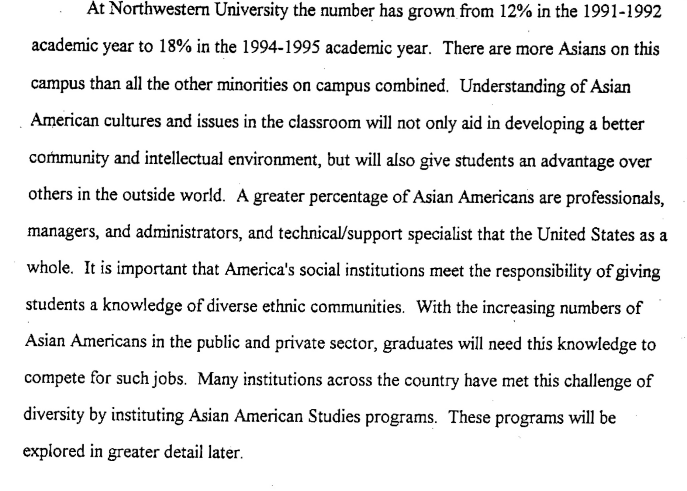
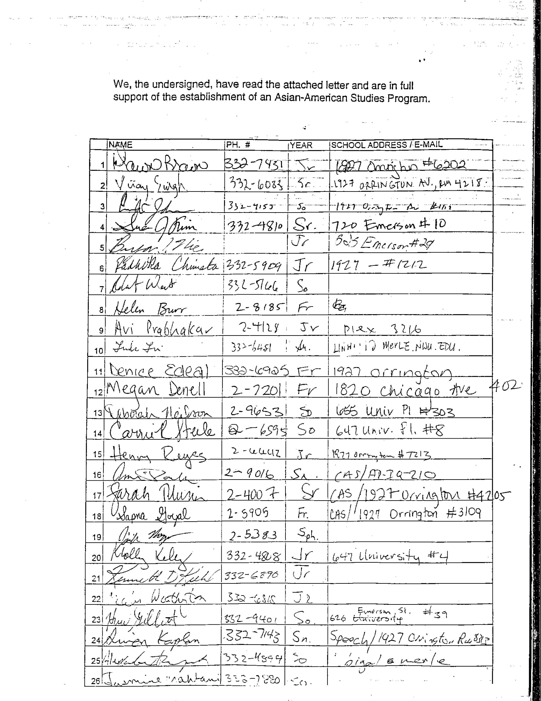
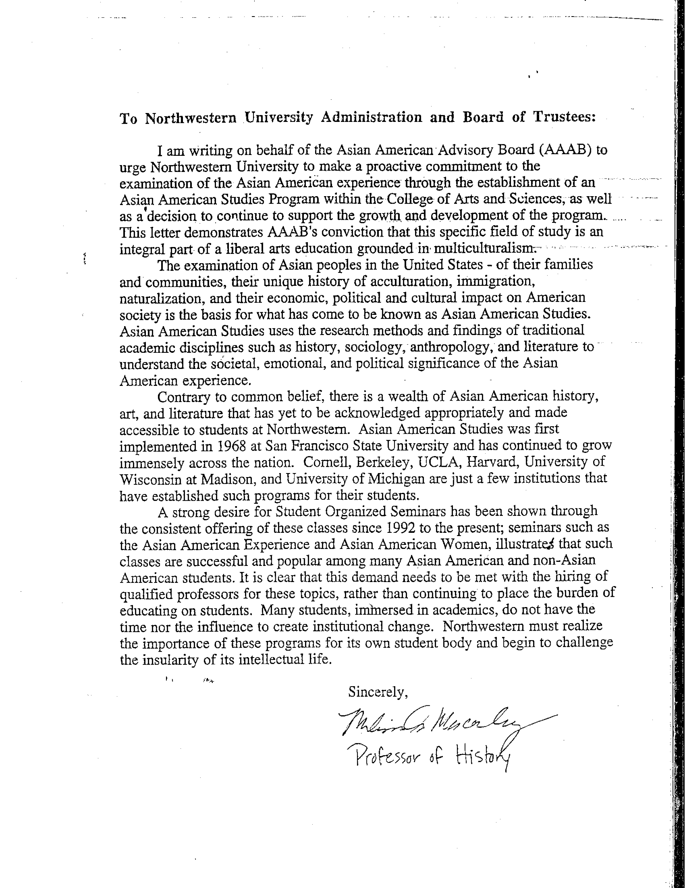
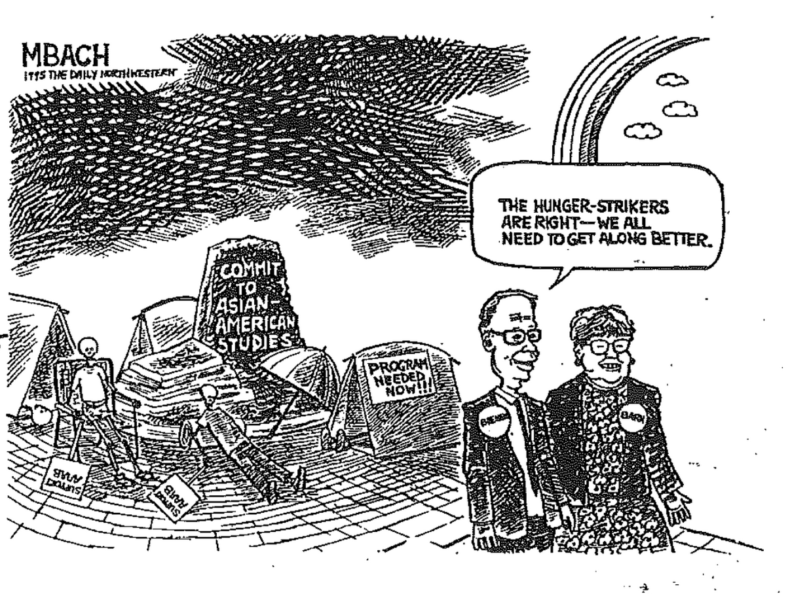
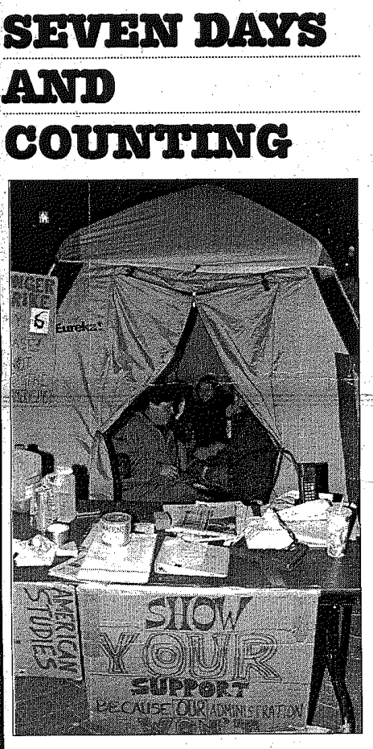
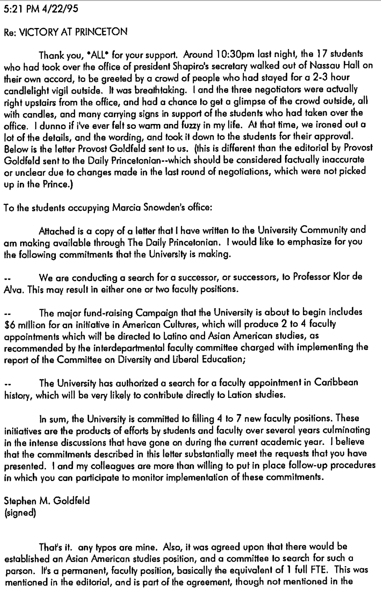
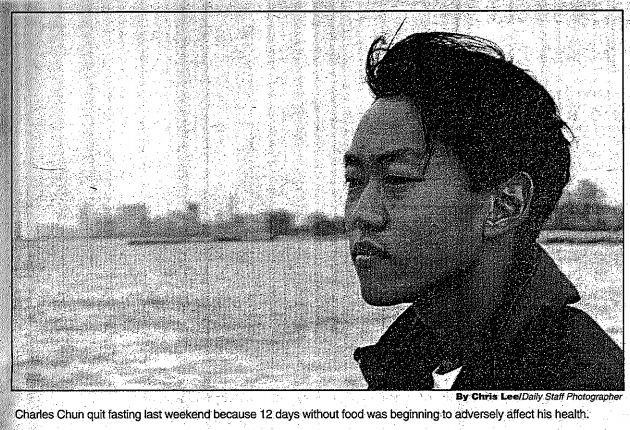
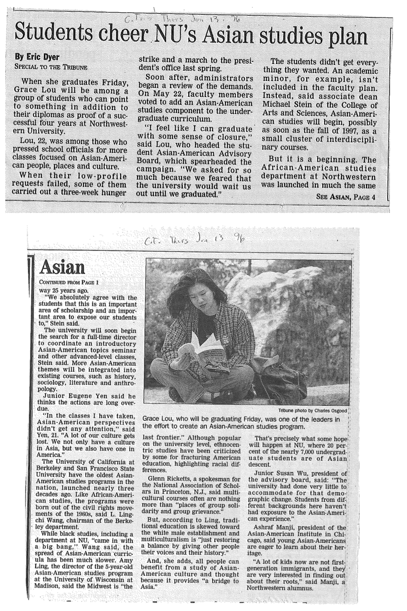
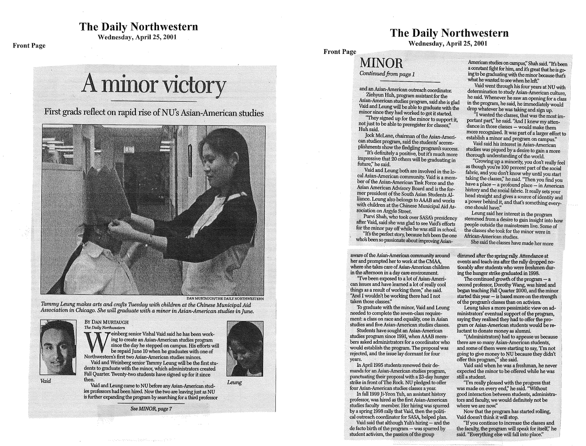

On April 12. 1995, 17 Northwestern students started a hunger strike to pressure the school into starting an Asian American Studies Program.
For almost a month, their actions shocked the campus, brought about the establishment of the department four years later and would forever be seared into collective Northwestern memory as an explosive but ultimately fruitful movement with a lasting legacy both within the school and across the nation.
This is their story. | By Yunita Ong and Ina Yang
Why
Sumi Pendakur and her friends were frustrated.
 Members of the AAAB in 1995, many of whom took part in the hunger strikes.
Members of the AAAB in 1995, many of whom took part in the hunger strikes.
For the past few months, they had been negotiating for an Asian American Studies program at Northwestern. As one of the 25 percent of Asian-Americans in her freshmen class, Pendakur felt that such a program that would seek to present the history, cultural contributions, and issues of Asian-Americans was only necessary.
Pendakur had grown up in Evanston, IL, where she said was mostly 'black and white' in the 1990s. In Northwestern, she found herself embracing her Indian-American identity first by joining LOTUS, a student advocacy group for South Asians, and then participating in Asian American Advisory Board's (AAAB) political activities on campus. THere, she found that her desire to learn more about her own identity was shared by her fellow classmates. A few of them had been teaching student-led seminars on Asian-American Studies for the past few years and with the class hitting full capacity, they felt that it was time to get a more permanent program going.
Professor Ji-Yeon Yuh, current director of Asian American Studies Program at Northwestern University, explains further the status quo at the time in this audio clip, originally recorded for the NU Asian Archives project.
In early February, the AAAB, the student advisory board dealing with advocacy for the Asian-American population on campus, wrote up their own 200-page proposal for an Asian American studies program, which included plans to hire five professors and a program director. In this proposal, they explained the importance of Asian American studies.
This proposal garnered several letters of faculty support and over 1200 student signatures.
 However, the response was less than what Pendakur and the AAAB had hoped for. Although Henry Bienen, then the president of Northwestern University, admitted that the cost of the proposed program were not prohibitive, he rejected every single point of the AAAB's proposal. He acknowledged that there was a need and demand for the program but refused to commit to any action to demonstrate an intent to implement one.
Let me assure you as I assured the students with whom I met: I am not against this program. I have an open mind about it. I am against arbitrary deadlines to do this or that. Henry Bienen, in a letter dated February 14, 1995 to Robert Yap
Again attempting to compromise, the AAAB revised their plan, asking for only two tenure-track professors and a director for an Asian American studies program. The administration countered with proposals for visiting lecturers and temporary programs. The students felt like they were getting nowhere and that the administration was simply stalling for time and waiting for them to graduate so that their demands could be quietly swept under the carpet.
So on April 12th, they decided to fight.
At a rally of 300 students held to protest the administration's latest refusal to consider proposals, they announced the beginning of a hunger strike.
Timeline
This timeline summarizes what happened during this explosive incident in Northwestern University. By clicking the pink buttons, you will be able to filter the key events by the major actors.
-
April 9, 1995, Sunday
On this day, 13 students decided to strike until the university committed to hiring one full-time tenure track professor who would ensure the institution of an Asian American studies program and funds to develop the program. The students were frustrated after several meetings with administrators who refused to address any specifics in AAAB's prior proposals.
"The only thing I'm committed to is looking into it. But they've been saying it for two years. They're still stuck in bureaucratic garbage." Rob Yap, AAAB former president, AAAB vows Hunger strike (Daily Northwestern April 10, 1995)
-
April 10, 1995, Monday
President Bienen publicly stated that starting a hunger strike was the wrong way to go about in getting they wanted. The Dean of the College of Arts and Sciences (CAS) Lawrence Dumas wrote a letter to AAAB promising to invite several experts from different academic disciplines.
"I think its an inappropriate response. It's not the way to go around changing things in the curriculum. This is not a bargaining process." President Henry Bienen
-
April 12, 1995, Wednesday
"It was a snowy and windy day when the AAAB held a 150-student strong rally and a march that started at The Rock and ended at the offices of President Bienen. Several students and student group leaders spoke at the rock about creating an Asian American Studies Program. They chanted slogans like "No program, no peace" and "We will not be ignored" as they made their way to Rebecca Crown Center, even though Bienen was not in office that entire day. Following this at 11 a.m. seventeen students announced and began a hunger strike, camping out in tents at the center of the Northwestern campus, drinking only water, vitamins and juice for sustenance. Accompanying them in solidarity were sixty students wo showed their support by pledging to fast for one day.
A vigil was held at midnight Wednesday night to help strikers to pass through the first night, during which students lit candles and read Asian-American literature to one another.
A nurse was stationed 24 hours a day in the basement of University Hall throughout the strike in case of emergencies.
"Basically, we're just asking them to hire someone. Is that too much to ask for one tenure-track professor?" AAAB President Grace Lou
Cartoon from The Daily Northwestern on April 12, 1995.
 -
April 13, 1995, Thursday
The Conservative Council, a right-wing student group, ordered pizza and handed it out to passing students at the Rock in to mock the hunger strikers. Tension rose once students realized what the significance of their actions was. Some students grabbed the pizza and threw it away and one woman even grabbed an entire box and threw it to the ground.
"We were demonstrating against the absurd by being absurd. It's like lying in the office and kicking and screaming because you didn't get your way." Kevin Frost, Conservative Council President
"It doesn't affect us that much. Let them waste their money." Robert Yap, Former president of AAAB
-
April 14, 1995, Friday
The student organizers began to be internally divided about continuing the hunger strike. Some of them started to worry about academic responsibilities and the health of the student strikers. However, some others did not feel that it would be responsible for them to end the strike just after three days.
The strikers sent another letter to administrators on Friday, written by Paul Igasaki, VP of the Equal Employment Opportunity Commission. In the letter, Igasaki, an NU alumnus, called for NU to take the lead in developing an Asian-American studies program. They did not receive any response.
"I have a midterm and a paper due on Monday. I had to study. I can't drop out (of school)." CAS freshman Miika Fukuwa said, as she stopped fasting on Friday.
-
April 17, 1995, Thursday
On Easter Sunday and Passover, when many students went home, the 10 remaining hunger strikers continued to camp out at the rock.
By this time, more than 60 students had fasted at some point or another but seven students had dropped out by then.
Another rally was held, when a crowd of about 250 students and faculty (at the Rock) chanted, "1-2-3-4, administration open the door; 5-6-7-8, A-A-Studies, we can't wait" to the drum rhythm of Loose Roots, a traditional Korean percussion troupe with members from the University of Chicago and the University of Illinois at Chicago. Local media such as CBS, NBC and FOX were present.
"It's not too good with the midterms coming up." CAS freshman Joshua Klugman
"I really feel strongly about this. Even though I'm sick, these are the lengths I will go to to show my support." Charles Chung, CAS junior "They've got to know when to quit." Registered nurse Barbara Ferguson, who was stationed by Northwestern to monitor the health of the hunger strikers.
The tent in front of the rock as pictured by The Daily Northwestern.
The Rock as pictured by The Daily Nothwestern.

-
April 18, 1995, Tuesday
AAAB President Grace Lou announced a change in tactic - all students are being asked to sign up for one to six day shifts.
Bienen wrote a letter to students participating in the hunger strike stating that he was concerned about students putting themselves at risk. Nevertheless, Beinen said the administration would take the proper channels to deal with the issue of Asian-American Studies.
Students across the nation began learning of the going-ons at Northwestern. A wind of activism started slowly sweeping the nation.
"We cannot and will not abridge that process (to approve programs) because it is central to the governance of a university and absolutely vital to its intellectual health and well-being. I got here in January, and I don't think I'm dragging my feet. I am not responsible for what happened before I got here. We should do it in a timely way. We should take it up and have a program and more classes in an incremental way." President Henry Bienen
"One day we all shall conquer." Woodrow Lucas, CAS sophomore, co-leader of the action committee, concluded AAAB's statement with a reading of his strike-inspired poem "The Fence of Fear."
-
April 19, 1995, Wednesday
Dean Lawrence Dumas and all the deans in the College of Arts and Sciences (CAS) negotiated with the hunger strikers for hours and they finally offered the prospect of four Asian American Studies classes to be taught next year.
After hours of negotiation with the CAS deans, they go home to consider their offer of opening Asian American Studies classes next year.
At Columbia University in New York, student have created an ad hoc committee for Asian-American studies.
-
April 20, 1995, Thursday
In a letter to the Dean, AAAB rejected Dean Dumas' proposal to commit funding for four courses in 1995 and then 1996 school years in a letter to the Dean because the students felt it would not "guarantee that NU students will always have the opportunity to take a course on Asian Americans."
Eight Stanford University students who called themselves Concerned Students for Asian American Studies began fasting in support of the Northwestern hunger strike. More than 300 students there signed a statement supporting the hunger strikers at Northwestern.
At Princeton University, 17 students from the Chicano Caucus and Asian American Students Association staged a sit-in at the office of their president, Harold Shapiro, calling for an ethnic studies center on their campus.
"No programs, no peace. No courses, no peace." Princeton students shouted slogans similar to those chanted at NU's rallies.
This excerpt of an email from Princeton University students announced their victory a day later on their campus over their university administration for an institutional commitment to ethnic studies, inspired by the struggle at Northwestern.
 -
April 23, 1995, Sunday
More than 250 students flocked to an AAAB-organized rally to protest the continued impasse with the administration. This day also happened on the "Day of NU", the day prospective students visited Northwestern with their parents to help determine whether they will accept the university's offer of admission.
They handed out flyers and stuck posters everywhere. Some examples: a poster with a picture of the board of trustees that read "Most in need of an Asian American Studies Class."
"We went into negotiations asking for a formal endorsement (by the administration) to the Faculty Curricular Policies Committee and a hiring of tenure track faculty in the interim of its deliberation. But all we got was a refusal to endorse Asian-American Studies, a refusal to state any specifics regarding possible funding and an effort to pacify us with four (temporary) classes." Statement by AAAB
"I think it's ridiculous Northwestern has no Asian-American studies program. I'm probably going to choose Cornell (University), which does have a program, instead." Jean Wong, 18, a prospective student from New York City who attended the rally
"The protest shows Northwestern has active and involved students. I support the effort for Asian-American studies. As soon as I got here and heard this rally was going on I headed straight over here with my parents. I think the university will catch on eventually that this program is needed."" Amir Islami, 18, a prospective student from Waterloo, Iowa.
-
April 24, 1995, Monday
President Bienen wrote a letter to AAAB, in which he questioned AAAB's candor while saying the administration has been "open and honest" in its communications with the group.
Bienen emphasized that NU never rejected bringing Asian American studies to the curriculum, but that such a proposal must proceed through the Curricular Policies Committee, which reviews changes in the CAS curriculum.
"(Dean Dumas), and We, have done our part; it is time you did yours by working with us, not against us, to bring the Asian-American experience and culture to the curriculum in a permanent, meaningful way." President Henry Bienen
-
April 25, 1995, Tuesday
Students planned a takeover of a campus building on Tuesday.
The planned takeover at the bursar's office or the office of the Dean, was called off.
Students from the Midwest Asian American Student Union declared a 'Day of Solidarity' in support of the AAAB, including a 24-hour fast and a candlelight vigil on campuses like Ball State, Indiana, Bucknell, Pennsylvania and University of Maryland.
-
April 26, 1995, Wednesday
One of the original hunger strikers, Charles Chun, ended his hunger strike that day. He had gone for twelve days without food - the longest of all of the hunger strikers - and lost over twenty pounds.
Charles Chun, the last hunger striker standing, as pictured in The Daily Northwestern.
 -
May 3, 1995, Thursday
Students attended an open conference by President Bienen in Norris University Center, asking questions about the university's commitment to Asian American studies.
-
May 5, 1995, Saturday
At President Bienen's inauguration, students plan to protest by dressing in black with a gold ribbon and standing at the back "as a symbolic and non-violent protest."
-
May 7, 1995, Monday
AAAB accepted NU's promise to create four courses in Asian American studies by next fall. They ended the hunger strike and removed the tents from the Rock, feeling that the university was not offering anything new and everyone was tired. The AAAB leaders decided to focus on lobbying the faculty directly.
"The strike was not affecting the administration the way it did in the beginning." AAAB Chairperson Grace Lou
Impact
Across the nation
The energy and passion from Northwestern's hunger strike reverberated across many college campuses across the nation. Messages of support poured in from across the country. Universities that sent messages of solidarity or organized action in support of the demands at Northwestern included DePaul University, University of Illinois in Chicago, Notre Dame, University of Chicago, Columbia University, Brown University, Harvard, University of Pennsylvania, University of Maryland, Cornell, University of Wisconsin, and Stanford.
Professor Jinah Kim, now a professor at the Asian American Studies Program, was herself involved in the hunger strikes as an undergraduate in Columbia University. Here, she shares her experiences.
But that was not all. Students at more and more universities began advocating for ethnic studies and refused to yield to the conservative statism of their administrations. For the first time, they began to take action to make their case and voices heard. Following Northwestern's steps, Princeton students organized a sit-in and protest for Asian American and Latino Studies during April 20th to 21st, before Northwestern's hunger strike had even ended.
A year after Northwestern's hunger strike in April 1996, as the student population at Columbia University in New York grew more diverse, four Columbia students pitched a tent in the middle of campus and began a hunger strike, demanding the establishment of an ethnic studies department.
Beyond the strike
The hunger strikers of 1995 scored a minor victory with the four promised Asian American classes. However, progress from there happened at a slow pace. In May 1996, Northwestern faculty voted to add an Asian American studies program to the curriculum but only chose to make it a small cluster of interdisciplinary courses rather than an academic minor and major. After the 1995 strike, it would take four years and more intense lobbying in order for the Asian American Studies Program to be finally established at Northwestern in 1999 as a minor in WCAS with two core faculty members.
In June 2001, the first AAS minor graduates were Tammy Leung and Vishal Vaid. None of the original hunger strikers ever got to take courses under this academic minor but as seen in this Daily Northwestern article, their actions had influenced later generations personally and profoundly.
We are not revolutionaries. We are not a bunch of rabble-rousing loose cannons. We are students. Students who ask for nothing more than a right to learn. AAAB in a statement quoted by the Chicago Tribune on April 24, 1996
Since then, the program has grown to consist of four core faculty as well as postdoctoral fellows, graduate students and lecturers. Together, they now offer more than 20 courses on various topics such as Asian American History; Asian/Black Relations; Asian American Literature; Asian American Rebels in Popular Culture; Race and the Prison Industrial Complex; Asian American Civil Rights; Race and Globalization; Asian American Religions; Bollywood and Beyond; Asians in Cinema; Topics in Vietnamese America; Race and Linguistics; Asian American Masculinities and Femininities and more.
In this video, Prof. Kim speaks about the impact Asian American Studies has had on her students as well as on her professional career.
The hunger strike was not just asking for the establishment of a curriculum. The hunger strikers were also asking for the university's recognition of their culture and their ethnic group on campus. By building strong relationships with student leaders outside the Asian American community, students were able to build and lead this multicultural coalition to protest for diversity on behalf of the AAAB and the Asian American community.
Noting that the Asian-American students had received support from white, black, and hispanic classmates and student organizations, Jennifer Taniguchi, one of the original hunger strikers, said, "The struggle is to make the administration responsive to the concerns of all students." Therefore, the strike serves as an example of great cross-cultural collaboration on a scale not oft seen on this campus, although student leaders of cultural groups recognize the merits of working together.
In 2012, a group of Northwestern students started the Asian NU Project in order to bring together Northwestern's Asian community and to empower students to be proud of their identities. Many students in this project revisited the Asian American hunger strikes in 1995, seeing themselves as part of a long lineage of such student activism almost a decade ago.